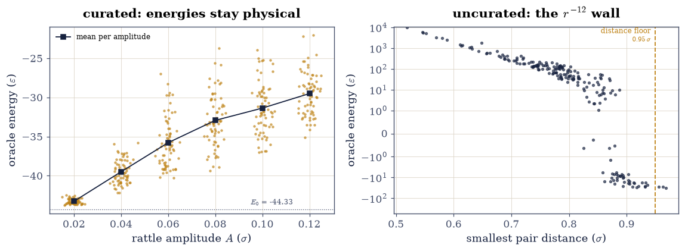
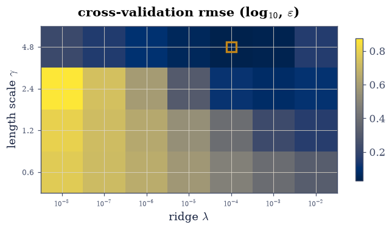
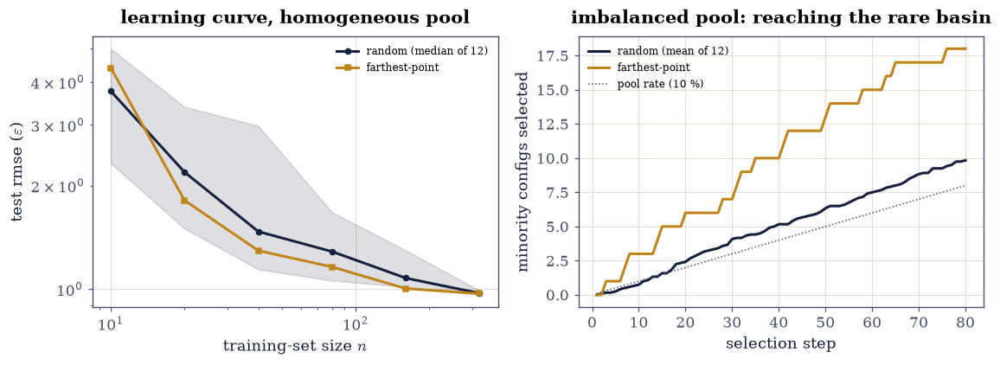
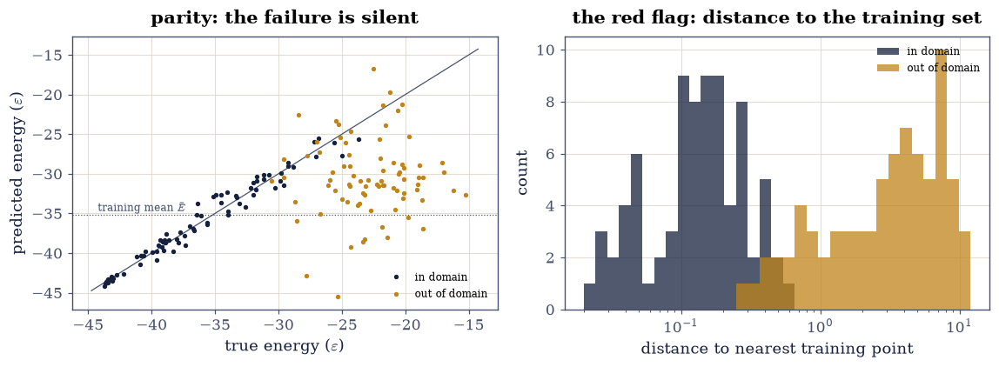

7.3 Learning the Potential#
Notebook overview#
§7.1 turned an atomic structure into a vector a model can accept, and §7.2 ended on a pointed question: is a training set chosen to cover descriptor space the set you would want to fit a model to? Answering it requires a model, so this notebook builds the whole supervised-learning pipeline for a potential energy surface, end to end and with nothing imported from a machine-learning library: a labelled dataset of Lennard-Jones cluster configurations, a global descriptor assembled from the symmetry functions of §7.1, and kernel ridge regression solved by exact linear algebra [RTMullervL12]. Because the labelling oracle here is the Lennard-Jones energy of §2.1 rather than a day of density-functional theory, we can afford the truth for every prediction — which makes this the honest laboratory for studying the method, exactly as a production team would prototype on a cheap surrogate before spending real compute.
Three lessons structure the notebook. A dataset is a curated object: one careless configuration with two overlapping atoms carries a wall energy of thousands of ε and poisons every regression it touches. A kernel model is exact linear algebra with two analytic limits, so it can be certified before it is trusted. And a fitted potential fails silently outside its training domain, returning confident numbers with no error bars; the red flag that exposes the failure is not in the predictions at all, but in the distance between the query and the training set.
Provenance. This notebook develops Lecture 10 and Lecture 11 of the course (machine learning for atomistic systems; sampling), an exercise designed by the author (Raymond Amador) to complete the chapter that restores those lectures. Like its two companions it uses no committed calculation: the oracle, the descriptors, and the model are all built here, so every number can be re-derived from scratch. The full course credit is in the footer.
Reading a validation. Each exercise closes with a check against an independent fact: a literature minimum energy, an analytic limit of the regression, a monotonicity the theory demands, a failure the theory predicts. A ✗ flags a mismatch to investigate; a ✓ is strong evidence, not proof.
Scope. We fit energies of one cluster size with one descriptor and one kernel, because the pathologies worth teaching (dataset poisoning, regularisation limits, extrapolation failure) appear already in the smallest honest example. Forces, multiple elements, and production descriptor sets are surveyed in the Outlook.
Theory in brief#
The supervised-learning frame#
Every method in this course computes the energy of a configuration from first principles, at a cost that repeats for every configuration. Machine-learning potentials [BartokPKCsanyi10, BP07] propose to pay that cost only \(n\) times: evaluate an expensive oracle on a training set of configurations, then fit a cheap surrogate that generalises to configurations the oracle never saw. The ingredients are a dataset \(\{(\mathbf{x}_i, E_i)\}_{i=1}^{n}\), where \(\mathbf{x}_i\) is a fixed-length descriptor of configuration \(i\) and \(E_i\) its oracle energy, and a regression model mapping descriptor to energy. Everything in this notebook is about what those two ingredients hide.
Kernel ridge regression#
A linear fit in descriptor space is too rigid for a potential energy surface, but a linear fit in a nonlinearly transformed space is not. The kernel trick makes that transformation implicit: choose a kernel \(k(\mathbf{x}, \mathbf{x}')\) measuring the similarity of two configurations, and write the prediction as a kernel expansion over the training set,
with \(\bar{E}\) the training-set mean, subtracted so the model only has to learn deviations from it. Requiring the least-squares residual plus a ridge penalty \(\lambda \sum_i \alpha_i^2\) to be minimal gives the coefficients as the solution of one linear system [RTMullervL12],
and for the similarity measure we use the radial-basis-function kernel with a single length scale \(\gamma\) in (standardised) descriptor space,
The ridge parameter \(\lambda\) is usually introduced as a guard against noise, but our labels are exact (the oracle is deterministic), and \(\lambda\) still matters, twice over. Analytically it interpolates between two limits the model can be certified against: as \(\lambda \to \infty\) the coefficients are crushed to zero and Eq. Eq. 73 returns the constant \(\bar{E}\), while as \(\lambda \to 0\) the system forces \(K\boldsymbol{\alpha} = \mathbf{E} - \bar{E}\) and the model passes through every training point exactly. Numerically, \(\lambda\) sets the conditioning of the matrix in Eq. Eq. 74: two nearly identical training configurations make two nearly identical rows of \(K\), and without the ridge the solve amplifies rounding error into wild coefficients. Both faces of \(\lambda\) appear as measurements below.
What the model cannot tell you#
Eq. Eq. 73 is a weighted sum of Gaussians centred on the training points. A query far from every training point in descriptor space sees every kernel value near zero, so the prediction relaxes toward \(\bar{E}\) regardless of the true energy: the model extrapolates toward its mean, silently. The honest companion of a kernel potential is therefore not an error bar it cannot produce, but the distance from the query to its nearest training neighbour, which costs one row of kernel evaluations and flags the failure before it happens.
Setup#
The Setup below holds this notebook’s data and instruments — nothing you are asked to build. It is collapsed so the building stays yours; expand it whenever you want the details.
Exercise 1 — A dataset is a curated object#
Before any learning happens, someone has to decide which configurations the oracle labels, and this decision is physics, not bookkeeping. Sampling displacements around a minimum is the standard way to cover the configurations a simulation at modest temperature would visit. But a Gaussian displacement has no respect for the \(r^{-12}\) wall: rattle hard enough and eventually two atoms land nearly on top of each other, and a single such configuration carries an energy of thousands of ε. Fed to a least-squares fit, whose loss is quadratic in the residual, that one point outweighs the entire physical dataset. Real machine-learning-potential pipelines therefore reject unphysical geometries before labelling, exactly as we do here.
Part a) Recover the reference structure: minimise the 13-atom Lennard-Jones
cluster with scipy.optimize.minimize(method="L-BFGS-B", jac=True) on the
lj_energy_gradient oracle from the Setup, from 40 random starts drawn as
numpy.random.default_rng(0).normal(scale=0.8, size=39). Keep the best
minimum as the icosahedral reference \(E_0\), and also keep the lowest minimum
lying at least \(0.5\,\varepsilon\) above \(E_0\): Exercise 3 needs a second basin.
Part b) Build the curated training pool: for each amplitude \(A\) in
AMPS_TRAIN \(= \{0.02, \dots, 0.12\}\,\sigma\), draw Gaussian rattles of the
reference (numpy.random.default_rng(1), scale=A) and keep the first 70
whose min_pair_distance is at least DMIN \(= 0.95\,\sigma\), labelling each
kept configuration with its oracle energy. Then build the cautionary control:
200 rattles at \(A = 0.12\,\sigma\) from numpy.random.default_rng(7) with no
distance floor, labelled the same way. Report the energy range of both sets.
Part c) Fingerprint the curated pool with global_fingerprint and
standardise the features: \(Z = (X - \mu)/s\) with \(\mu\) and \(s\) the per-feature
mean and standard deviation over the pool, applied by broadcasting. (The RBF
kernel of Eq. Eq. 75 uses one length scale for all features, so
features must first be brought to a common scale.)
global minimum E0 = -44.326801 eps (literature -44.326801)
second basin E1 = -41.471980 eps (E1 - E0 = 2.855)
curated pool: 420 configs, E in [-43.75, -22.06] eps (8957 rejected by the floor)
uncurated control: 200 configs, E in [-32.49, 10273.5] eps, 156 above zero
fingerprints: 420 x 8, all finite: True

Fig. 85 The curated dataset and what curation prevents. Left: oracle energies of the 420 curated configurations against their rattle amplitude A (amber; ink squares mark the per-amplitude mean), rising smoothly from the icosahedral minimum at -44.33 epsilon as the rattles stiffen. Right: the uncurated control at A = 0.12 sigma, energy against smallest interatomic distance on a symmetric log axis. The moment a pair slips below the distance floor at 0.95 sigma (dashed), the r^-12 wall takes over and energies climb four orders of magnitude; a quadratic loss would let any one of these points outvote the entire physical dataset.#
✓ the 40-restart relaxation recovers the literature global minimum of the 13-atom Lennard-Jones cluster, so the reference structure the whole dataset is rattled from is the true icosahedron [E0 = -44.326801 vs -44.326801 (Wales & Doye 1997)]
✓ the restarts also found a genuinely distinct second basin at modest energy above the global minimum, available as the minority structure of Exercise 3 [E1 - E0 = 2.855 eps]
✓ with the 0.95-sigma distance floor every curated energy stays within a few epsilon of the minimum, the regime a fit can actually represent [max curated E = -22.06 eps]
✓ while the uncurated control at the same nominal amplitude contains wall-energy outliers orders of magnitude above the physical range, which a quadratic loss would weight above everything else combined [max uncurated E = 10273.5 eps]
✓ and every fingerprint is finite with every feature carrying variance, so standardisation is well defined and no NaN reached the cutoff function [feature std in [0.207, 1.632]]
True
Exercise 2 — Kernel ridge regression, certified before trusted#
The model is Eqs. Eq. 73–Eq. 75: one kernel matrix, one linear solve. That brevity is the point — nothing here is a black box, so every behaviour of the model is a theorem about a linear system, and the two analytic limits of \(\lambda\) give certification gates that do not depend on any learned quantity. Only after the implementation passes both limits do we let cross-validation choose the hyperparameters it actually runs with.
Part a) Implement KRR as two functions: krr_fit, which assembles the RBF
kernel matrix of Eq. Eq. 75 by broadcasting
(X[:, None, :] - X[None, :, :]) and solves Eq. Eq. 74 with
np.linalg.solve (never an explicit inverse: the solve is backward-stable and
cheaper), and krr_predict, which evaluates Eq. Eq. 73 on new
points. Write this one yourself — the implementation is the lesson.
Part b) Certify the two limits on the curated dataset of Exercise 1, split
340/80 into train/test by numpy.random.default_rng(2).permutation. At
\(\lambda = 10^{9}\) every prediction must equal the training mean \(\bar{E}\); at
\(\lambda = 10^{-10}\) on a 40-point training subset (small, so the solve stays
well conditioned) the model must interpolate its own training energies.
Part c) Choose \((\gamma, \lambda)\) by 5-fold cross-validation on the
training set (folds by np.arange(n) % 5), over the grid
\(\gamma \in \{0.6, 1.2, 2.4, 4.8\}\) and \(\lambda \in \{10^{-8}, \dots,
10^{-2}\}\), then report the test error of the chosen model against the
mean-predictor baseline.
Part d) Measure the numerical face of \(\lambda\): the condition number
(np.linalg.cond) of \(K + \lambda I\) on the full 340-point training set at
\(\lambda = 10^{-6}\) and at the cross-validated \(\lambda\). The ridge is doing
work here even though the labels carry no noise at all.
lambda -> inf : max |prediction - mean| = 4.83e-07 eps
lambda -> 0 : train rmse = 1.83e-05 eps (label std 5.45)
CV pick: gamma = 4.8, lambda = 1e-04 (cv rmse 1.073)
test rmse 0.971 eps vs mean-predictor 5.415 eps (5.6x better)
cond(K + 1e-6 I) = 2.69e+08 cond(K + 1e-04 I) = 2.69e+06 ratio 100

Fig. 86 Five-fold cross-validation error (colour, log scale) over the hyperparameter grid of the kernel ridge regression: kernel length scale gamma against ridge parameter lambda. The amber square marks the selected pair (gamma = 4.8, lambda = 1e-4). The valley is broad and flat, which is typical: many pairs fit almost equally well, and the steep cliff at the smallest lambda values for tight kernels is conditioning, not physics — nearly duplicate rows of the kernel matrix amplify rounding error once the ridge stops protecting the solve.#
✓ in the infinite-ridge limit the fitted model collapses to the training-mean constant predictor, exactly as the crushed-coefficients algebra demands [max deviation 4.83e-07 eps]
✓ while in the vanishing-ridge limit the model interpolates its own training labels, the exact-fit theorem of the unregularised kernel system [train rmse 1.83e-05 vs label std 5.45 eps]
✓ and the cross-validated model beats the mean-predictor baseline severalfold on held-out configurations, so the fingerprint carries genuine information about the energy [5.415 / 0.971 = 5.6x]
✓ and the cross-validated ridge improves the kernel system's condition number a hundredfold even though the labels are noise-free: the ridge is chosen for conditioning, not against noise [cond ratio 100]
True
Exercise 3 — Spending the labelling budget#
In production the oracle is the expensive part: each label is a density-functional calculation, so “how much data?” and “which data?” are questions about compute budget. The learning curve answers the first — error against training-set size, on a log-log axis where power-law learning appears as a straight line. The second is the question §7.2 closed with: farthest-point sampling [IAGiofre+18] selects configurations that cover descriptor space, and whether coverage is what a fit wants was left open there. With a working model we can now measure it, on the homogeneous pool and then on the harder case the coverage argument was made for: a pool where one structure is rare.
Part a) Measure the learning curve of the cross-validated model from
Exercise 2: for each size \(n \in \{10, 20, 40, 80, 160, 320\}\), train on 12
random subsets of the training set (numpy.random.default_rng(100 + s).choice
with replace=False for \(s = 0, \dots, 11\)) and record the median test rmse
(the median, because a quadratic error over few draws has a heavy tail).
Part b) Repeat with farthest-point sampling: for each \(n\), train on the
first \(n\) points of farthest_point_sampling(Z_train, n, start=0) from the
Setup and compare against the random median. Watch the smallest budget
separately: §7.2 showed that the earliest
farthest-point picks chase the corners of the distribution, and a training set
made only of corners is a real cost, not an artefact.
Part c) The imbalanced case: build a fresh two-basin pool with
numpy.random.default_rng(3) — for each amplitude in AMPS_TRAIN, 60 curated
rattles of the icosahedral reference and 10 of the second-basin structure from
Exercise 1, i.e. 420 configurations in all, then hold out the last 45 majority
and 25 minority configurations as a probe set and keep the first 315 + 35 as
the selection pool (a 10 % minority). Count how many of 12 random 10-point draws
(numpy.random.default_rng(200 + s)) contain no minority configuration at
all, at which selection number farthest-point sampling first picks a minority
point, and the minority fraction among its first 80 picks against the pool
fraction of 10 %.
n = 10: random median 3.763 eps fps 4.394 eps ratio 0.86
n = 20: random median 2.188 eps fps 1.812 eps ratio 1.21
n = 40: random median 1.471 eps fps 1.294 eps ratio 1.14
n = 80: random median 1.286 eps fps 1.161 eps ratio 1.11
n = 160: random median 1.077 eps fps 1.004 eps ratio 1.07
n = 320: random median 0.973 eps fps 0.971 eps ratio 1.00
random draws of 10: 7/12 contain zero minority configs (pool fraction 10%)
fps: first minority pick at #3; minority fraction in 80 picks 22%

Fig. 87 How to spend a labelling budget. Left: learning curve of the kernel model on the homogeneous pool, test error against training-set size on log-log axes; the band spans the 12 random draws, the ink line is their median, and the amber line is farthest-point sampling — worse at the smallest budget, where its corner-chasing early picks (the animation of the previous notebook showed exactly this) leave the interior unrepresented, and modestly better at every budget beyond, because a homogeneous pool leaves little for coverage to fix. Right: the imbalanced two-basin pool, cumulative number of minority-basin configurations selected against selection step. Random selection (ink, mean of 12 draws) accumulates minority points at the pool rate of one in ten, and more than half of its 10-point draws contain none at all; farthest-point sampling (amber) jumps to the rare basin within its first few picks, because in descriptor space the minority structures are far from everything already selected.#
✓ the median learning curve decreases monotonically with training-set size, as a curve measured with cross-validated hyperparameters and a median over draws should [3.76 > 2.19 > 1.47 > 1.29 > 1.08 > 0.97]
✓ with the full budget improving the ten-point model severalfold, so more oracle calls genuinely buy accuracy in this regime [rmse(n=10)/rmse(n=320) = 3.9]
✓ farthest-point selection matches or beats the random median at every budget beyond the smallest on the homogeneous pool (its advantage is modest there, and at n = 10 its corner-chasing start genuinely hurts — both halves of the honest answer to the question of §7.2) [fps/random at n>=20: max 1.00; at n=10 1.17]
✓ on the imbalanced pool a sizeable share of small random draws contain no minority-basin configuration at all, the failure mode coverage-based selection exists to prevent [7/12 ten-point draws are minority-blind]
✓ while farthest-point sampling reaches the rare basin within its first few selections, because a rare structure is by definition far from everything already chosen in descriptor space [first minority pick at #3]
✓ and over-represents the minority basin well beyond its pool fraction, which is precisely the property a training set for a rare-event study needs [22% selected vs 10% in the pool]
True
Exercise 4 — Where the model lies#
A fitted potential returns a number for any input, and nothing in the number says whether the model has ever seen anything like the query. This is the central operational danger of machine-learning potentials: a molecular-dynamics run that wanders outside the training domain does not crash, it just quietly produces wrong forces. The theory section predicted the failure mode exactly — far from the training set, every kernel entry in Eq. Eq. 73 is small and the prediction relaxes toward the training mean \(\bar{E}\) — and it also named the cheap diagnostic: the distance from the query to its nearest training neighbour in descriptor space.
Part a) Build the out-of-domain probe: with numpy.random.default_rng(4),
40 curated rattles of the icosahedral reference at each amplitude in
AMPS_FAR \(= \{0.18, 0.24\}\,\sigma\) (same DMIN floor, so every probe is a
physical configuration; what changes is only the distance from the training
amplitudes). Predict their energies with the Exercise 2 model and compare the
rmse against the in-domain test error, and compute the Spearman rank
correlation (scipy.stats.spearmanr) between predicted and true energies to
ask whether the model at least ranks the probes correctly.
Part b) Compute the red flag that would have caught it: for every
in-domain test point and every probe, the Euclidean distance to the nearest
training point in standardised descriptor space (one broadcast, min over the
training axis). Compare the two distributions and their medians.
rmse: in-domain 0.971 eps, out-of-domain 9.610 eps (9.9x worse)
out-of-domain rank correlation (Spearman) -0.008
nearest-training distance, median: in-domain 0.139, out-of-domain 3.773 (27x)

Fig. 88 Silent failure, and the flag that exposes it. Left: predicted against true energy for the in-domain test set (ink) and the out-of-domain probes at rattle amplitudes 0.18 and 0.24 sigma (amber); the diagonal is perfect prediction. In domain the points hug the diagonal; out of domain the predictions detach and drift toward the training mean (dotted), the generic behaviour of a kernel expansion evaluated far from its centres — and nothing in the numbers themselves warns of it. Right: distribution of the distance from each query to its nearest training point in standardised descriptor space. The in-domain and out-of-domain distributions separate by more than an order of magnitude in the median, so thresholding this one cheap number flags essentially every unreliable prediction before it is used.#
✓ outside the training amplitudes the prediction error grows severalfold over the in-domain test error even though every probe is a perfectly physical configuration, the silent-extrapolation failure the theory section predicted [9.61 / 0.97 = 9.9x]
✓ and the out-of-domain predictions carry essentially no rank information about the true energies: the model does not merely lose precision out there, it stops ordering configurations correctly at all [Spearman rho = -0.008]
✓ while the nearest-training-neighbour distance separates the two regimes by an order of magnitude in the median, so the one-number diagnostic would have flagged the unreliable predictions before use [median 3.77 vs 0.14 (27x)]
True
Notebook summary#
A machine-learning potential is a pipeline, and the first stage is editorial: the curated pool stayed within \(\sim 20\,\varepsilon\) of the icosahedral minimum, while unrestricted rattling at the same nominal amplitude produced wall energies four orders of magnitude larger — single configurations that would dominate a quadratic loss outright.
Kernel ridge regression is exact linear algebra, and that made it certifiable: the fitted model reproduced both analytic ridge limits (mean predictor and exact interpolation) before any hyperparameter was chosen, and the cross-validated model then beat the mean predictor more than fivefold on held-out configurations.
The ridge earned its place with noise-free labels: cross-validation selected \(\lambda = 10^{-4}\) for conditioning, improving the kernel system’s condition number a hundredfold over a nearly unregularised solve.
The learning curve fell monotonically, nearly fourfold from 10 to 320 labels, and farthest-point sampling answered the question §7.2 left open with both halves of the truth: on a homogeneous pool coverage helps only modestly and its corner-chasing start actually hurts at the smallest budget, but on an imbalanced pool it reached the 10 % minority basin by its third pick, while more than half of the small random draws never saw that basin at all.
Out of domain the model failed silently: physically reasonable probes at twice the training amplitude were predicted with ten times the in-domain error and essentially no rank correlation, while the distance to the nearest training point separated the regimes by well over an order of magnitude — the one cheap number that turns a silent failure into a loud one.
Outlook#
Forces, not just energies. A potential for dynamics must predict forces, and Eq. Eq. 73 obliges: the gradient of a kernel expansion is analytic, so forces come from the same coefficients, and training on forces (3N labels per oracle call instead of one) is the standard way to make an expensive label go further [BartokPKCsanyi10].
Better representations. Our eight global G2 features cannot separate everything (§7.1 proved specific blind spots); production models use per-atom descriptor sets (many symmetry functions [BP07], or SOAP [BartokKCsanyi13]) with the energy as a sum of atomic contributions, which also makes the model size-transferable.
Active learning. The red flag of Exercise 4 upgrades naturally from diagnostic to strategy: run the model, flag the configurations it is least sure of, send exactly those to the oracle, retrain. That loop, seeded by a farthest-point start like the one measured in Exercise 3, is how modern training sets are actually assembled [IAGiofre+18].
The oracle in production. Everything here transfers with the Lennard-Jones oracle swapped for density-functional theory — the workflows of §4.2 and §6.1 are precisely what the labels cost, which is why dataset curation and label budgeting are research skills rather than bookkeeping.
References#
Albert P. Bartók, Risi Kondor, and Gábor Csányi. On representing chemical environments. Physical Review B, 87(18):184115, 2013. doi:10.1103/PhysRevB.87.184115.
Albert P. Bartók, Mike C. Payne, Risi Kondor, and Gábor Csányi. Gaussian approximation potentials: the accuracy of quantum mechanics, without the electrons. Physical Review Letters, 104:136403, 2010. doi:10.1103/PhysRevLett.104.136403.
Jörg Behler and Michele Parrinello. Generalized neural-network representation of high-dimensional potential-energy surfaces. Physical Review Letters, 98(14):146401, 2007. doi:10.1103/PhysRevLett.98.146401.
Giulio Imbalzano, Andrea Anelli, Daniele Giofré, Sinja Klees, Jörg Behler, and Michele Ceriotti. Automatic selection of atomic fingerprints and reference configurations for machine-learning potentials. The Journal of Chemical Physics, 148(24):241730, 2018. doi:10.1063/1.5024611.
Matthias Rupp, Alexandre Tkatchenko, Klaus-Robert Müller, and O. Anatole von Lilienfeld. Fast and accurate modeling of molecular atomization energies with machine learning. Physical Review Letters, 108:058301, 2012. doi:10.1103/PhysRevLett.108.058301.